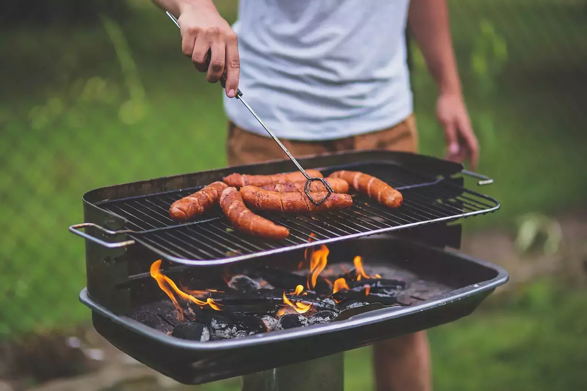

O churrasco é sempre uma boa razão para reunir os amigos!
Churrasco
Ingredientes:
1 - Um bom pedaço de carne bovina, que pode ser costela, picanha ou etc;
2 - Sal grosso à vontade;
3 - Um ou vários espetos (conforme a fome ou os trocos do vivente);
4 - Fogo de lenha, de gás, carvão.
Modo de preparo:
1 - Espetar de pedaço a pedaço no espeto, passar o sal e colocar no fogo. Mais ou menos a uma distancia de 25 cm;
2 - Se houver pressa ou muita fome, come-se somente chamuscada, meio a meio, correndo sangue (como eu gosto). Mas se não houver pressa e, tiver gente de muita frescura, assa-se até ficar esturicada.